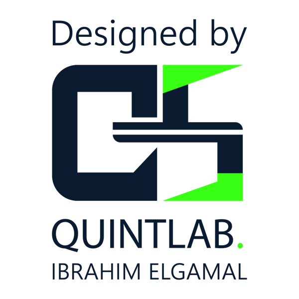

generated by Eng.Ibrahim Elgamal
تُعد أعمال صب الخرسانة تحت الماء من أهم وأدق العمليات الهندسية التي تتطلب مهارة عالية ودقة كبيرة في التنفيذ، حيث تهدف إلى بناء القواعد والأساسات للمنشآت المائية مثل الجسور، والموانئ، والسدود، ومنصات استخراج النفط البحرية. وتنبع صعوبة هذه الأعمال من بيئة العمل غير المستقرة بطبيعتها، والتي تواجه تحديات مستمرة نتيجة حركة المياه، والتيارات البحرية، وضغط السوائل الذي يحيط بموقع الصب من كل اتجاه.
ولضمان نجاح هذه العملية والحصول على هيكل خرساني قوي ومتين، لا يمكن صب الخرسانة العادية بنفس الطريقة التقليدية المتبعة على اليابسة. والسبب في ذلك هو أن صب الخرسانة مباشرة في الماء يؤدي إلى جرف مكوناتها الأساسية وفصل الأسمنت عن الركام، مما يضعفها بشدة ويجعلها عاجزة عن تحمل الأوزان المطلوبة. لهذا السبب، يبتكر المهندسون طرقاً وأساليب خاصة تمنع اختلاط الخرسانة الطازجة بالمياه أثناء نقلها إلى القاع.
تعتمد عمليات صب الخرسانة تحت الماء على خلطات خرسانية مصممة خصيصاً لتتحمل الظروف المائية، حيث تتميز بزيادة نسبة الأسمنت ومواد رابطة تمنع تفككها، بالإضافة إلى استخدام إضافات خاصة تحسن من لزوجتها وسهولة تدفقها. ومع الالتزام بالخطوات الهندسية الصحيحة، تنجح هذه المشاريع في إقامة منشآت مائية صلبة وعالية الجودة تخدم المجتمعات وتصمد لعقود طويلة في وجه أقوى التيارات الطبيعية.
الأعمدة والأساسات العملاقة التي تُبنى في قاع الأنهار أو الخلجان لحمل أجسام الجسور والكباري التي تربط بين الضفتين، وتحتاج لصب ضخم يتحمل الأوزان الهائلة وحركة المرور وصدمات المياه.
الهياكل الضخمة التي يتم تثبيتها في أعماق البحار والمحيطات، وتعتمد في ثباتها على قواعد خرسانية مجوفة ومغمورة تمُلأ بالخرسانة لتقاوم أعنف الأمواج والرياح العاتية.
منشآت تمتد إلى أعماق كبيرة تحت مجرى النهر لمنع تسرب المياه من تحت السد وتحمل الضغط الهائل لملايين الأمتار المكعبات من المياه المخزنة.
المنشآت التي تُنشأ لاستقبال السفن التجارية العملاقة وتتطلب أساسات عميقة وصلبة في قاع البحر لتتحمل أوزان البضائع والرافعات الثقيلة.
تُعتبر حركة المياه والتيارات البحرية المستمرة من أشد العوامل خطورة عند صب الخرسانة الطازجة؛ إذ تؤدي إلى جرف المادة الإسمنتية الرابطة وفصل حبات الركام عن العجينة، مما يسبب ما يُعرف بالانفصال الحبيبي، وينتج عنه خرسانة ضعيفة مليئة بالفراغات والمسام وتقل قدرتها على تحمل الأحمال بشكل كبير.
هو الضغط الناتج عن وزن عمود الماء والذي يزداد كلما زاد العمق، حيث يُشكل قوة معاكسة تُقاوم خروج الخرسانة من الأنابيب وتدفقها، مما يتطلب استخدام خلطات ذات وزن نوعي عالٍ ومضخات قوية للتغلب عليه وضمان استقرار الصب.
تُعبر عن احتواء مياه البحار على نسب عالية من الأملاح والكلوريدات التي تهاجم الخرسانة الطازجة وتخترق مسامها، مما قد يؤدي إلى تآكل حديد التسليح وتلف الهيكل الإنشائي، وهو ما يتطلب استخدام إسمنت مقاوم وإضافات لمنع النفاذية.
يعتمد مفهوم الصب تحت الماء بشكل أساسي على وضع الخرسانة في موقعها المحدد دون أن تتعرض للتلامس المباشر مع المياه المحيطة، وذلك لحمايتها من الانفصال والتلف أثناء عملية التنفيذ. ولتحقيق ذلك بطريقة آمنة وفعالة، يتوفر العديد من الطرق والأساليب الهندسية التي تضمن وصول الخرسانة إلى القاع بكامل قوتها وتماسكها.
تُعد طريقة الأنبوب الرأسي (التريمي) من أكثر الأساليب الهندسية كفاءة واعتمادية لصب الخرسانة المغمورة تحت الماء، خاصة في المنشآت العميقة مثل قواعد الكباري، الحوازيق البحرية، وحوائط قفص التثبيت. تُحقّق هذه الطريقة المبدأ الأساسي للصب المغمور بإنشاء نظام ينقل الخرسانة مباشرة إلى القاع دون أي احتكاك أو تلامس مباشر مع المياه المحيطة.
يتكون النظام من قمع علوي (قادوس) لتلقي الخرسانة، يتصل بأنابيب معدنية رأسية محكمة الإغلاق يتراوح قطرها عادة بين 10 إلى 15 سم.
تعتمد هذه الطريقة على فصل مراحل التنفيذ؛ فلا يتم صب الخرسانة جاهزة ومخلوطة معاً، بل يتم أولاً ملء الشدات أو الفرم بالركام الكبير، وبعد وضع الركام في الشدات، يتم حقن الأسمنت اللباني من خلال أنابيب خاصة تمتد وصولاً إلى قاع الفرم ويتدفق الأسمنت اللباني من الأسفل إلى الأعلى، حيث يقوم بدفع المياه الموجودة إلى خارج الفرم ويحل محلها تدريجياً، ليمتلئ بالكامل ويغطي الفراغات بين حبيبات الركام ليتصلب ويشكل الكتلة الخرسانية.
تعتمد هذه الطريقة على تعبئة خرسانة ذات قوام جاف داخل أكياس مسامية مصنوعة عادةً من قماش الجوت بحيث تتسع الكيس الواحد لحوالي متر مكعب تقريباً ويتم ربطه بإحكام. الفكرة هنا تكمن في احتواء الخرسانة داخل أكياس تمنع غسلها أو تشتت مكوناتها بفعل مياه البحر أو التيارات المائية أثناء إنزالها، مما يتيح لها التماسك والاستمرار في التصلد تحت الماء.